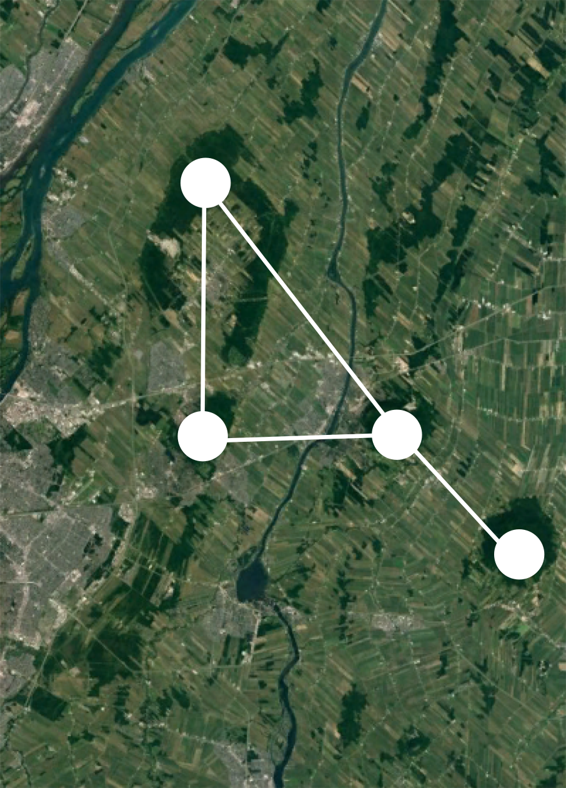

class: center, middle, transition, container-fluid count: false .row[ .col-md-5.text-right[  ] .col-md-7.text-left[ # Alien ## Prédire les interactions entre espèces avec R .block[ Par Steve Vissault <i class="fa fa-github"></i> <i class="fa fa-twitter"></i> <i class="fa fa-web"></i> .small[Éco-informaticien, [Chaire de recherche en Écologie Intégrative](https://ielab.recherche.usherbrooke.ca)] ] .block[   ] ] ] --- class: slides # Mise en contexte ## Les réseaux: une façon d'abstraire le monde .row[ .col-md-4.text-center[ #### Réseau de transport <hr style="background-color:#034370;height: 1px; border: 0;width: 75%">  ] .col-md-4.text-center[ #### Réseau sociaux <hr style="background-color:#034370;height: 1px; border: 0;width: 75%">  ] .col-md-4.text-center[ #### Réseau paysager <hr style="background-color:#034370;height: 1px; border: 0;width: 75%"> </img> ] ] ??? Les réseaux sont une façon de représenter de représenter le monde. Il en existe une diversité: les réseaux ferroviaires, sociaux, l'échelle du paysage --- class: slides # Définition d'un réseau ## Une sémantique conjointe .row[ .col-md-6.text-center[  ] .col-md-6[ - Théorie des graphes - Bien connus dans les disciplines de l'informatique et des mathématiques - Un graphe est un assemblage de **noeuds** reliés par des **liens** - De nombreuses innovations pour prédire les potentielles liens entre les noeuds. ] ] ??? Les réseaux partagent tous une sémantique conjointe: des noeuds et des liens --- class: slides # Définition d'un réseau ## Les noeuds possèdent des propriétés .row[ .col-md-6.text-right[ ### Si l'on prend un réseau social tel que Facebook... <br>  ] .col-md-6.text-center[  ] ] --- class: slides # Définition d'un réseau ## Les noeuds possèdent des propriétés .row[ .col-md-6[ .col-md-12[ - ### A partir des propriétés, il est possible de suggérer des liens. ] .col-md-12[ - ### Quelle est la probabilité qu'une nouvelle publiée par moi (Steve) se retrouve sur le fil d'actualité Facebook de Julie? ] ] .col-md-6[ .col-md-12.text-center[  ] ] ] --- class: slides # Cadre prédictif ## Suggérer un lien à partir des propriétés d'un noeud .row[ .col-md-5.text-left[ $$\sum_{lien=e} u_e w_e d_e$$ **Où:** - `\(u_e\)` est le score d'affinité entre l'utilisateur regardant et l'utilisateur ayant posté la nouvelle - `\(w_e\)` le poid attribué à ce type de nouvelle - `\(d_e\)` le temps depuis la création de la nouvelle ] .col-md-7.text-center[  ] ] --- class: slides # Cadre prédictif .row[ .col-md-12.text-center[ ## Ce type d'algorithms de rangs sont répandus à travers de nombreuses plateformes. ] .col-md-6.text-center[  ] .col-md-6.text-center[  ] ] .row[ .col-md-6.text-center[  ] .col-md-6.text-center[  ] ] --- class: slides, transition, middle .row[ .col-md-7[ #Écologie ## Peux-t-on faire la même chose en écologie? ] .col-md-5[  ] ] ??? ### *C'est à dire, à partir d'informations écologiques existantes, suggérer des liens/interactions entre espèces sous forme de probabilités?* --- class: slides # Le projet Alien... ### Une initiative d'un réseau de collaborateurs <iframe src="./network.html" width="100%" height="500px" frameBorder="0"></iframe> --- # Challenge - Challenge 1: Hétérogénéité des données - Challenge 2: Diversité des méthodes ??? Introduction aux challenges Diversité de méthodes Ces challenges ne sont pas inhérent au domaine de l'écologie --- # Alien est un package R qui vise à remplir ces deux défis illustration du pipeline --- ??? 1. Qu'est ce qu'un réseau? - Réseau électrique (stations, transformateurs, maison) - Réseau sociaux (facebook) - Réseau ferovière - Réseau de protéine: https://academic.oup.com/bioinformatics/article/22/13/1623/193937/Exploiting-indirect-neighbours-and-topological 2. Définition d'un noeud et d'un lien 3. Prédire à partir des propriétés des noeuds Algorithme Facebook: suggestion d'ami Algorithme Netflix: suggestion de film 4. En écologie, on a des réseaux. Définir les réseaux 5. Problématiques, nos espèces ne sont pas informatisés Manque de données 6. Comment prédire les interactions? Ce servir des propriétés des noeuds déjà connues pour inférer sur l'interaction Qu'elles sont les informations connus: - Traits - Phylogénie - Environnement - Co-occurence - Co-abundance 8. La recherche est florissante dans le domaine: Diversité des méthodes 7. En plus du manque de données Problèmes: diversité des formats (ontologie distincte) diversité des outils 8. alien, des données structurées pour un pipeline d'analyse facilitée 9 Présentation de alienData 10. Présentation 11. Implication pour la recherche - Reconstruire les réseaux (contexte de CC, réassemblage des communautées) - Espèces invasives via similiarité écologique - Extinction locale - Invasion